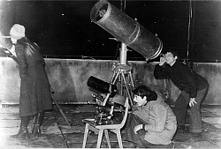
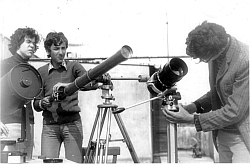
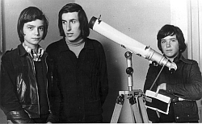
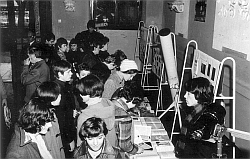
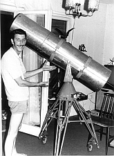
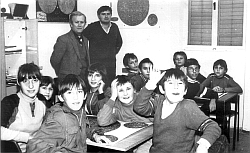

Astronomical Society "ISTRA" Pula
History, mission and activities
At the initiative of interested citizens and school youth, the Astronomical Society "Istra" was founded on December 27, 1973. The most important task of the Society was and remains to this day the popularization of astronomy.
As the Society did not have its own premises, the first observations of celestial bodies for members and the public were held on the terrace at 10 Lenjinova Street (now Flanatička Street). Immediately after its founding, the Society became a member of Narodna tehnika Pula (now the Association of Technical Culture of Pula), so meetings and occasional lectures were held in its premises.
For the purpose of promotion and attracting new members, telescopes were occasionally placed on city promenades, while sections were established in schools to attract school youth. At that time, due to difficulties in acquiring telescopes, much effort was invested in their self-construction.






Restoration of the Observatory
A key event for the development of the Society occurred in 1979. At that time, use was obtained of the remaining part of the former Austrian Naval Observatory in Monte Zaro Park (then Ruđer Bošković Park). As the building was in a very neglected state, an action for its restoration was immediately launched.
The main dome was restored with the help of the mentioned company only in the first part of 1999, unfortunately to a lesser extent than planned, but even that was a big deal for Pula astronomers.
The next phase of renovation began in 2006, when, with the financial support of city authorities, the flat roof over the classroom and lecture hall was renovated at the last minute, and was simultaneously converted into a terrace for summer observations and lectures.
Located in one of the most beautiful places in Pula, close to the city center, with a view extending towards the Pula bay and harbor, the old Pula Observatory deserved a complete renovation so that, worthy of the scientific discoveries made from it, its appearance and facilities could enrich the historical and cultural content of our three-thousand-year-old city.
Although the current Pula Observatory has neither the significance nor the role of the former one from the second half of the 19th century, when under the aegis of the double-headed eagle of the vanished Austro-Hungarian Monarchy it was one of the places where the torch of science burned, both are bound by the thread of historical existence. If nothing else, now as in the time of our famous predecessors, the same ground is beneath us and the same stars are above us.
Instruments
In the four-meter dome of the Pula Observatory, a catadioptric telescope "Celestron 11 CGE" with an 11-inch objective diameter and a focal length of almost 3000 mm (F10) was installed at the end of 2006, replacing the "Celestron 8" telescope purchased back in 1975, which had faithfully served Pula astronomers until then.
Along with these two telescopes, the Observatory also houses several smaller portable telescopes with objective diameters of 200, 100, 90, 80, 70 and 50 mm, binoculars, as well as various telephoto lenses and filters, and other, mostly electronic equipment.